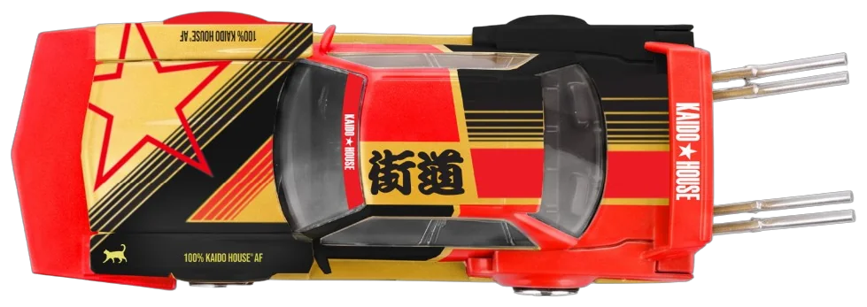

A MINI GT production
KHMG315
The Hornet
Nissan Skyline GT-R (R34) Tamiya x Kaido House “The Hornet” V2
In pre-order September 2026
KHMG313
Stock Car 23
Nissan Skyline GT-R (R33) Stock Car V1
In pre-order September 2026
KHMG309
Star-Tastic
Kaido Star-Tastic V1, a 100% Kaido House original
In pre-order August 2026
KHMG317
Gulf 71
Nissan Fairlady Z Kaido GT Gulf V1
In pre-order September 2026
KHMG319
Double Zero
Chevrolet Camaro Kaido Racing Team V1
In pre-order September 2026